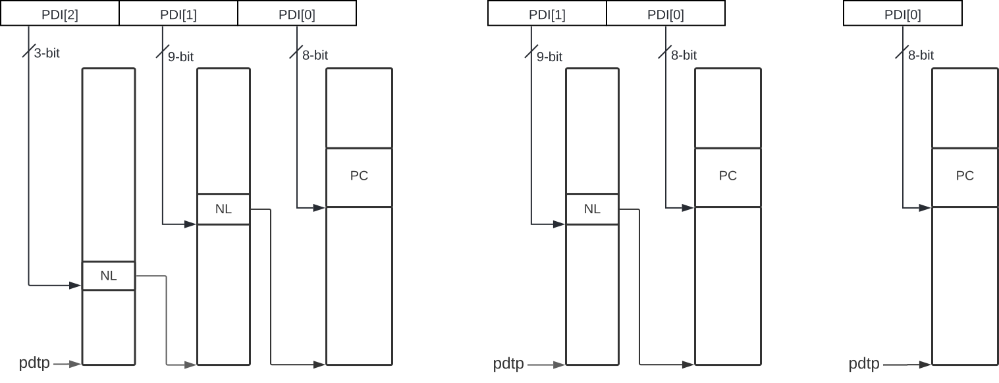

Data Structures
A data structure called device-context (DC) is used by the IOMMU to associate
a device with an address space and to hold other per-device parameters used
by the IOMMU to perform address translations. A radix-tree data structure called
device directory table (DDT) that is traversed using the device_id is used to
locate the DC.
The address space used by a device may require second-stage address translation
and protection when the control of the device is passed through to a Guest OS.
A Guest OS may optionally provide a first-stage page table for translating IOVA
used by a device controlled by the Guest OS to a GPA. When the use of a
first-stage is not required, then it may be effectively disabled by selecting the
first-stage address translation scheme to be Bare. The second-stage is used to
translate the GPA to a SPA.
When the control of the device is retained by the hypervisor or Host OS itself
then only the first-stage suffices to perform necessary address translations and
protections; the second-stage scheme may be effectively disabled for the device by
programming the second-stage address translation scheme to be Bare.
When second-stage address translation is not Bare, the DC holds the PPN of the
root second-stage page table; a guest-soft-context-ID (GSCID), which
facilitates invalidation of cached address translations on a per-virtual-machine
basis; and the second-stage address translation scheme.
Some devices support multiple process contexts where each context may be
associated with a different process and thus a different virtual address space.
The context in such devices may be configured with a process_id that
identifies the address space. When making a memory access, such devices signal
the process_id along with the device_id to identify the accessed address
space. An example of such a device may be a GPU that supports multiple process
contexts, where each context is associated with a different user process, such
that the GPU may access memory using the virtual address provided by the user
process itself. To support selecting an address space associated with the
process_id, the DC holds the PPN of the root Process Directory Table (PDT),
a radix-tree data structure, indexed using fields of the process_id to locate
a data structure called the Process Context (PC).
When a PDT is active, the controls for first-stage address translation are held
in the (PC).
When a PDT is not active, the controls for first-stage address translation are
held in the DC itself.
The first-stage address translation controls include the PPN of the root
first-stage page table; a process-soft-context-ID (PSCID), which facilitates
invalidation of cached address translations on a per-address-space basis; and
the first-stage address translation scheme.
To handle MSIs from a device controlled by a guest OS, an IOMMU must be able to redirect those MSIs to a guest interrupt file in an IMSIC. Because MSIs from devices are simply memory writes, they would naturally be subject to the same address translation that an IOMMU applies to other memory writes. However, the IOMMU architecture may treat MSIs directed to virtual machines specially, in part to simplify software, and in part to allow optional support for memory-resident interrupt files. To support this capability, the architecture adds to the device contexts an MSI address mask and address pattern, used together to identify pages in the guest physical address space that are the destinations of MSIs; and the real physical address of an MSI page table for controlling the translation and/or conversion of MSIs from the device. The IOMMU support for MSIs to virtual machines is specified by the Advanced Interrupt Architecture specification.
The DC further holds controls for the type of transactions that a device is
allowed to generate. One example of such a control is whether the device is
allowed to use the PCIe defined Address Translation Service (ATS) [5].
Two formats of the device-context structure are supported:
-
Base Format - is 32-bytes in size used when the special treatment of MSI as specified in Process to translate addresses of MSIs is not supported by the IOMMU.
-
Extended Format - is 64-bytes in size and extends the base format
DCwith additional fields to translate MSIs as specified in Process to translate addresses of MSIs.
If capabilities.MSI_FLAT is 1 then the Extended Format is used else the Base
Format is used.
The DDT used to locate the DC may be configured to be a 1, 2, or 3 level
radix-tree depending on the maximum width of the device_id supported. The
partitioning of the device_id to obtain the device directory indexes (DDI) to
traverse the DDT radix-tree are as follows:
device_id partitioningdevice_id partitioningThe PDT may be configured to be a 1, 2, or 3 level radix-tree depending on the
maximum width of the process_id supported by that device. The partitioning
of the process_id to obtain the process directory indices (PDI) to traverse
the PDT radix-tree are as follows:
process_id partitioning for PDT radix-tree traversal|
The |
|
All RISC-V IOMMU implementations are required to support DDT and PDT located in main memory. Supporting data structures in I/O memory is not required but is not prohibited by this specification. |
Device-Directory-Table (DDT)
The DDT is a 1, 2, or 3-level radix-tree indexed using the device directory
index (DDI) bits of the device_id to locate a DC.
The following diagrams illustrate the DDT radix-tree. The PPN of the root
device-directory-table is held in a memory-mapped register called the
device-directory-table pointer (ddtp).
Each valid non-leaf (NL) entry is 8-bytes in size and holds the PPN of the
next device-directory-table.
A valid leaf device-directory-table entry holds the device-context (DC).
DCDCNon-leaf DDT entry
A valid (V==1) non-leaf DDT entry provides the PPN of the next level DDT.
Leaf DDT entry
The leaf DDT page is indexed by DDI[0] and holds the device-context (DC).
In base-format the DC is 32-bytes. In extended-format the DC is 64-bytes.
The DC is interpreted as four 64-bit doublewords in base-format and as eight
64-bit doublewords in extended-format. The byte order of each of the
doublewords in memory, little-endian or big-endian, is the endianness as
determined by fctl.BE (iommu_registers.adoc#FCTRL). The IOMMU may read the DC fields in any
order.
Device-context fields
Translation control (tc)
tc) fieldDC is valid if the V bit is 1; If it is 0, all other bits in DC are
don’t-care and may be freely used by software.
If the IOMMU supports PCIe ATS specification [5] (see capabilities
register), the EN_ATS bit is used to enable ATS transaction processing. If
EN_ATS is set to 1, IOMMU supports the following inbound transactions;
otherwise they are treated as unsupported requests.
-
Translated read for execute transaction
-
Translated read transaction
-
Translated write/AMO transaction
-
PCIe ATS Translation Request
-
PCIe ATS Invalidation Completion Message
If the EN_ATS bit is 1 and the T2GPA bit is set to 1 the IOMMU performs the
two-stage address translation to determine the permissions and the size of the
translation to be provided in the completion of a PCIe ATS Translation Request
from the device. However, the IOMMU returns a GPA, instead of a SPA, as the
translation of an IOVA in the response. In this mode of operation, the ATC in the
device caches a GPA as a translation for an IOVA and uses the GPA as the address
in subsequent translated memory access transactions. Usually, translated requests
use a SPA and need no further translation to be performed by the IOMMU. However
when T2GPA is 1, translated requests from a device use a GPA and are
translated by the IOMMU using the second-stage page table to a SPA. The T2GPA
control enables a hypervisor to contain DMA from a device, even if the device
misuses the ATS capability and attempts to access memory that is not associated
with the VM.
|
When Use of |
|
Hypervisors that configure As an alternative to setting |
If EN_PRI bit is 0, then PCIe "Page Request" messages from the device are
invalid requests. A "Page Request" message received from a device is responded to
with a "Page Request Group Response" message. Normally, a software handler
generates this response message. However, under some conditions the IOMMU itself
may generate a response. For IOMMU-generated "Page Request Group Response"
messages the PRG-response-PASID-required (PRPR) bit when set to 1 indicates
that the IOMMU response message should include a PASID if the associated
"Page Request" had a PASID.
|
Functions that support PASID and have the "PRG Response PASID Required"
capability bit set to 1, expect that "Page Request Group Response" messages will
contain a PASID if the associated "Page Request" message had a PASID. If the
capability bit is 0, the function does not expect PASID on any "Page Request
Group Response" message and the behavior of the function if it receives the
response with a PASID is undefined. The |
Setting the disable-translation-fault (DTF) bit to 1 disables reporting of
faults encountered in the address translation process. Setting DTF to 1 does
not disable error responses from being generated to the device in response to
faulting transactions. Setting DTF to 1 does not disable reporting of faults
from the IOMMU that are not related to the address translation process. The
faults that are not reported when DTF is 1 are listed in iommu_in_memory_queues.adoc#FAULT_CAUSE.
|
A hypervisor may set |
The DC.fsc field holds the context for first-stage translation. If the
PDTV bit is 1, the field holds the process-directory table pointer (pdtp).
If the PDTV bit is 0, the DC.fsc field holds (iosatp).
The PDTV bit is expected to be set to 1 when DC is associated with a device
that supports multiple process contexts and thus generates a valid process_id
with its memory accesses. For PCIe, for example, if the request has a PASID
then the PASID is used as the process_id.
When PDTV is 1, the DPE bit may set to 1 to enable the use of 0 as the
default value of process_id for translating requests without a valid
process_id. When PDTV is 0, the DPE bit is reserved for future standard
extension.
The IOMMU supports the 1 setting of GADE and SADE bits if
capabilities.AMO_HWAD is 1. When capabilities.AMO_HWAD is 0, these bits are
reserved.
If GADE is 1, the IOMMU updates A and D bits in second-stage PTEs atomically.
If GADE is 0, the IOMMU causes a guest-page-fault corresponding to the original
access type if the A bit is 0 or if the memory access is a store and the D bit
is 0.
If SADE is 1, the IOMMU updates A and D bits in first-stage PTEs atomically. If
SADE is 0, the IOMMU causes a page-fault corresponding to the original access
type if the A bit is 0 or if the memory access is a store and the D bit is 0.
If SBE is 0, implicit memory accesses to PDT entries and first-stage PTEs are
little-endian else they are big-endian. The supported values of SBE are the
same as that of the fctl.BE field.
The SXL field controls the supported paged virtual-memory schemes as defined
in Table 3 and Table 2. If fctl.GXL is 1 then the
SXL field must be 1; otherwise the legal values for the SXL field are the
same as those for the fctl.GXL field.
When SXL is 1, the following rules apply:
-
If the first-stage is not Bare, then a page fault corresponding to the original access type occurs if the
IOVAhas bits beyond bit 31 set to 1. -
If the second-stage is not Bare, then a guest page fault corresponding to the original access type occurs if the incoming GPA has bits beyond bit 33 set to 1.
IO hypervisor guest address translation and protection (iohgatp)
iohgatp) fieldThe iohgatp field holds the PPN of the root second-stage page table and a
virtual machine identified by a guest soft-context ID (GSCID), to facilitate
address-translation fences on a per-virtual-machine basis. If multiple devices
are associated to a VM with a common second-stage page table, the hypervisor is
expected to program the same GSCID in each iohgatp. The MODE field is used
to select the second-stage address translation scheme.
The second-stage page table formats are as defined by the Privileged
specification. The fctl.GXL field controls the supported address-translation
schemes for guest physical addresses as defined in Table 1 and
Table 1.
The iohgatp MODE field identifies the paged virtual-memory schemes and its
encodings are as follows:
| Value | Name | Description |
|---|---|---|
0 |
|
No translation or protection. |
1-7 |
— |
Reserved for standard use. |
8 |
|
Page-based 41-bit virtual addressing (2-bit extension of Sv39). |
9 |
|
Page-based 50-bit virtual addressing (2-bit extension of Sv48). |
10 |
|
Page-based 59-bit virtual addressing (2-bit extension of Sv57). |
11-15 |
— |
Reserved for standard use. |
| Value | Name | Description |
|---|---|---|
0 |
|
No translation or protection. |
1-7 |
— |
Reserved for standard use. |
8 |
|
Page-based 34-bit virtual addressing (2-bit extension of Sv32). |
9-15 |
— |
Reserved for standard use. |
Implementations are not required to support all defined mode settings for
iohgatp. The IOMMU only needs to support the modes also supported by the MMU
in the harts integrated into the system or a subset thereof.
The root page table as determined by iohgatp.PPN is 16 KiB and must be aligned
to a 16-KiB boundary.
|
The |
Translation attributes (ta)
ta) fieldThe PSCID field of ta provides the process soft-context ID that identifies
the address-space of the process. PSCID facilitates address-translation
fences on a per-address-space basis. The PSCID field in ta is used as the
address-space ID if DC.tc.PDTV is 0 and the iosatp.MODE field is not Bare.
When DC.tc.PDTV is 1, the PSCID field in ta is ignored.
The RCID and MCID fields are added by the QoS ID extension. If
capabilities.QOSID is 0, these bits are reserved and must be set to 0.
IOMMU-initiated requests for accessing the following data structures use the
value configured in the RCID and MCID fields of DC.ta.
-
Process directory table (
PDT) -
Second-stage page table
-
First-stage page table
-
MSI page table
-
Memory-resident interrupt file (
MRIF)
The RCID and MCID configured in DC.ta are provided to the IO bridge on
successful address translations. The IO bridge should associate these QoS IDs
with device-initiated requests.
First-Stage context (fsc)
If DC.tc.PDTV is 0, the DC.fsc field holds the iosatp that provides
the controls for first-stage address translation and protection.

iosatp) fieldThe first-stage page table formats are as defined by the Privileged specification.
The DC.tc.SXL field controls the supported paged virtual-memory schemes.
The iosatp.MODE identifies the paged virtual-memory schemes and is encoded
as defined in Table 3 and Table 2. The iosatp.PPN
field holds the PPN of the root page of a first-stage page table.
When second-stage address translation is not Bare, the iosatp.PPN is a guest
PPN. The GPA of the root page is then converted by guest physical address
translation process, as controlled by the iohgatp, into a supervisor physical
address.
| Value | Name | Description |
|---|---|---|
0 |
|
No translation or protection. |
1-7 |
— |
Reserved for standard use. |
8 |
|
Page-based 39-bit virtual addressing. |
9 |
|
Page-based 48-bit virtual addressing. |
10 |
|
Page-based 57-bit virtual addressing. |
11-13 |
— |
Reserved for standard use. |
14-15 |
— |
Designated for custom use. |
| Value | Name | Description |
|---|---|---|
0 |
|
No translation or protection. |
1-7 |
— |
Reserved for standard use. |
8 |
|
Page-based 32-bit virtual addressing. |
9-15 |
— |
Reserved for standard use. |
When DC.tc.PDTV is 1, the DC.fsc field holds the process-directory table
pointer (pdtp). When the device supports multiple process contexts, selected
by the process_id, the PDT is used to determine the first-stage page table and
associated PSCID for virtual address translation and protection.
The pdtp field holds the PPN of the root PDT and the MODE field that
determines the number of levels of the PDT.
pdtp) fieldWhen second-stage address translation is not Bare, the pdtp.PPN field holds a
guest PPN. The GPA of the root PDT is then converted by guest physical address
translation process, as controlled by the iohgatp, into a supervisor physical
address. Translating addresses of PDT using a second-stage page table, allows the
PDT to be held in memory allocated by the guest OS and allows the guest OS to
directly edit the PDT to associate a virtual-address space identified by a
first-stage page table with a process_id.
| Value | Name | Description |
|---|---|---|
0 |
|
No first-stage address translation or protection. |
1 |
|
8-bit process ID enabled. The directory has 1 levels with
256 entries.The bits 19:8 of |
2 |
|
17-bit process ID enabled. The directory has 2 levels.
The root PDT page has 512 entries and leaf level has
256 entries. The bits 19:17 of |
3 |
|
20-bit process ID enabled. The directory has 3 levels. The root PDT has 8 entries and the next non-leaf level has 512 entries. The leaf level has 256 entries. |
4-13 |
— |
Reserved for standard use. |
14-15 |
— |
Designated for custom use. |
MSI page table pointer (msiptp)
msiptp) fieldThe msiptp.PPN field holds the PPN of the root MSI page table used to direct
an MSI to a guest interrupt file in an IMSIC. The MSI page table formats are
defined by the Advanced Interrupt Architecture specification.
The msiptp.MODE field is used to select the MSI address translation scheme.
| Value | Name | Description |
|---|---|---|
0 |
|
Recognition of accesses to a virtual interrupt file using MSI address mask and pattern is not performed. |
1 |
|
Flat MSI page table |
2-13 |
— |
Reserved for standard use. |
14-15 |
— |
Designated for custom use. |
When DC.iohgatp.MODE is Bare, the msiptp.MODE must be set to Off.
MSI address mask (msi_addr_mask) and pattern (msi_addr_pattern)
msi_addr_mask) fieldmsi_addr_pattern) fieldThe MSI address mask (msi_addr_mask) and pattern (msi_addr_pattern) fields
are used to identify the 4-KiB pages of virtual interrupt files in the guest
physical address space of the relevant VM. An incoming memory access made by a
device is recognized as an access to a virtual interrupt file if the destination
guest physical page matches the supplied address pattern in all bit positions
that are zeros in the supplied address mask. In detail, a memory access to guest
physical address A is recognized as an access to a virtual interrupt file’s
memory-mapped page if:
(A >> 12) & ~msi_addr_mask = (msi_addr_pattern & ~msi_addr_mask)
where >> 12 represents shifting right by 12 bits, an ampersand (&) represents
bitwise logical AND, and ~msi_addr_mask is the bitwise logical complement of
the address mask.
While the MSI address mask and pattern fields are 52 bits wide, if , then bits are reserved for future standard use and must be set to zero by software. MGPAW is determined as follows:
-
If
capabilities.Sv57x4is 1, then MGPAW = 59 -
Else if
capabilities.Sv48x4is 1, then MGPAW = 50 -
Else if
capabilities.Sv39x4is 1, then MGPAW = 41 -
Else if
capabilities.Sv32x4is 1, then MGPAW = 34 -
Otherwise, MGPAW =
capabilities.PAS
Device-context configuration checks
A DC with DC.tc.V=1 is considered as misconfigured if any of the following
conditions are true. If misconfigured then, stop and report "DDT entry
misconfigured" (cause = 259).
-
If any bits or encodings that are reserved for future standard use are set.
-
capabilities.ATSis 0 andDC.tc.EN_ATS, orDC.tc.EN_PRI, orDC.tc.PRPRis 1 -
DC.tc.EN_ATSis 0 andDC.tc.T2GPAis 1 -
DC.tc.EN_ATSis 0 andDC.tc.EN_PRIis 1 -
DC.tc.EN_PRIis 0 andDC.tc.PRPRis 1 -
capabilities.T2GPAis 0 andDC.tc.T2GPAis 1 -
DC.tc.T2GPAis 1 andDC.iohgatp.MODEisBare -
DC.tc.PDTVis 1 andDC.fsc.pdtp.MODEis not a supported mode-
capabilities.PD20is 0 andDC.fsc.pdtp.MODEisPD20 -
capabilities.PD17is 0 andDC.fsc.pdtp.MODEisPD17 -
capabilities.PD8is 0 andDC.fsc.pdtp.MODEisPD8
-
-
DC.tc.PDTVis 0 andDC.fsc.iosatp.MODEencoding is not a valid encoding as determined by Table 3 and Table 2. -
DC.tc.PDTVis 0 andDC.tc.SXLis 0DC.fsc.iosatp.MODEis not one of the supported modes-
capabilities.Sv39is 0 andDC.fsc.iosatp.MODEisSv39 -
capabilities.Sv48is 0 andDC.fsc.iosatp.MODEisSv48 -
capabilities.Sv57is 0 andDC.fsc.iosatp.MODEisSv57
-
-
DC.tc.PDTVis 0 andDC.tc.SXLis 1DC.fsc.iosatp.MODEis not one of the supported modes-
capabilities.Sv32is 0 andDC.fsc.iosatp.MODEisSv32
-
-
DC.tc.PDTVis 0 andDC.tc.DPEis 1 -
DC.iohgatp.MODEencoding is not a valid encoding as determined by Table 1 and Table 1. -
fctl.GXLis 0 andDC.iohgatp.MODEis not a supported mode-
capabilities.Sv39x4is 0 andDC.iohgatp.MODEisSv39x4 -
capabilities.Sv48x4is 0 andDC.iohgatp.MODEisSv48x4 -
capabilities.Sv57x4is 0 andDC.iohgatp.MODEisSv57x4
-
-
fctl.GXLis 1 andDC.iohgatp.MODEis not a supported mode-
capabilities.Sv32x4is 0 andDC.iohgatp.MODEisSv32x4
-
-
capabilities.MSI_FLATis 1 andDC.msiptp.MODEis notOffand notFlat -
DC.iohgatp.MODEis notBareand the root page table determined byDC.iohgatp.PPNis not aligned to a 16-KiB boundary. -
capabilities.AMO_HWADis 0 andDC.tc.SADEorDC.tc.GADEis 1 -
capabilities.ENDis 0 andfctl.BE != DC.tc.SBE -
DC.tc.SXLvalue is not a legal value. Iffctl.GXLis 1, thenDC.tc.SXLmust be 1. Iffctl.GXLis 0 and is writable, thenDC.tc.SXLmay be 0 or 1. Iffctl.GXLis 0 and is not writable thenDC.tc.SXLmust be 0. -
DC.tc.SBEvalue is not a legal value. Iffctl.BEis writable thenDC.tc.SBEmay be 0 or 1. Iffctl.BEis not writable thenDC.tc.SBEmust be the same asfctl.BE. -
capabilities.QOSIDis 1 andDC.ta.RCIDorDC.ta.MCIDvalues are wider than that supported by the IOMMU.
When DC.iohgatp.MODE is Bare, DC.msiptp.MODE must be set to Off by
software. All other settings are reserved. Implementations are recommended
to stop and report "DDT entry misconfigured" (cause = 259) if a reserved
setting is detected.
|
Some Other implementations only detect such addresses to be invalid when the data structure referenced by these fields needs to be accessed. Such implementations may detect access-violation faults in the process of making the access. An earlier version of the specification did not recommend implementations to
check that |
Process-Directory-Table (PDT)
The PDT is a 1, 2, or 3-level radix-tree indexed using the process directory
index (PDI) bits of the process_id.
The following diagrams illustrate the PDT radix-tree. The root
process-directory page number is located using the process-directory-table
pointer (pdtp) field of the device-context. Each non-leaf (NL) entry
provides the PPN of the next level process-directory-table. The leaf
process-directory-table entry holds the process-context (PC).

Non-leaf PDT entry
A valid (V==1) non-leaf PDT entry holds the PPN of the next-level PDT.

Leaf PDT entry
The leaf PDT page is indexed by PDI[0] and holds the 16-byte process-context
(PC).
The PC is interpreted as two 64-bit doublewords. The byte order of each of the
doublewords in memory, little-endian or big-endian, is the endianness as
determined by DC.tc.SBE. The IOMMU may read the PC fields in any order.
Process-context fields
Translation attributes (ta)
ta) fieldPC is valid if the V bit is 1; If it is 0, all other bits in PC are don’t
care and may be freely used by software.
When Enable-Supervisory-access (ENS) is 1, transactions requesting supervisor
privilege are allowed with this process_id else the transaction is treated as
an unsupported request.
When ENS is 1, the SUM (permit Supervisor User Memory access) bit modifies
the privilege with which supervisor privilege transactions access virtual
memory. When SUM is 0, supervisor privilege transactions to pages mapped with
U bit in PTE set to 1 are disallowed.
When ENS is 1, supervisor privilege transactions that read with execute
intent to pages mapped with U bit in PTE set to 1 are disallowed, regardless
of the value of SUM.
The software assigned process soft-context ID (PSCID) is used as the address
space ID for the process identified by the first-stage page table when
first-stage address translation is not Bare.
First-Stage context (fsc)
The PC.fsc field provides the controls for first-stage address translation and
protection.
The PC.fsc.MODE is used to determine the first-stage paged virtual-memory
scheme and its encodings are as defined in Table 3 and
Table 2. The DC.tc.SXL field controls the supported paged
virtual-memory schemes. When PC.fsc.MODE is not Bare, the PC.fsc.PPN field
holds the PPN of the root page of a first-stage page table.
When second-stage address translation is not Bare, the PC.fsc.PPN field holds
a guest PPN of the root of a first-stage page table. Addresses of the first-stage
page table entries are then converted by guest physical address translation
process, as controlled by the DC.iohgatp, into a supervisor physical address.
A guest OS may thus directly edit the first-stage page table to limit access by
the device to a subset of its memory and specify permissions for the device
accesses.
|
The |
Process-context configuration checks
A PC with PC.ta.V=1 is considered as misconfigured if any of the following
conditions are true. If misconfigured then stop and report "PDT entry
misconfigured" (cause = 267).
-
If any bits or encoding that are reserved for future standard use are set
-
PC.fsc.MODEencoding is not valid as determined by Table 3 and Table 2. -
DC.tc.SXLis 0 andPC.fsc.MODEis not one of the supported modes-
capabilities.Sv39is 0 andPC.fsc.MODEisSv39 -
capabilities.Sv48is 0 andPC.fsc.MODEisSv48 -
capabilities.Sv57is 0 andPC.fsc.MODEisSv57
-
-
DC.tc.SXLis 1 andPC.fsc.MODEis not one of the supported modes-
capabilities.Sv32is 0 andPC.fsc.MODEisSv32
-
|
Some Other implementations only detect such addresses to be invalid when the data structure referenced by these fields needs to be accessed. Such implementations may detect access-violation faults in the process of making the access. |
Process to translate an IOVA
The process to translate an IOVA uses the hardware IDs (device_id and
process_id) to locate the Device-Context and the Process-Context. The
Device-context and Process-context provide the root PPN of the page tables,
PSCID, GSCID, and other control parameters that affect the address
translation and protection process. When address translation caches
(Caching in-memory data structures) are implemented, the translation process may use the GSCID and
PSCID to associate the cached translations with their address spaces.
The process to translate an IOVA is as follows:
-
If
ddtp.iommu_mode == Offthen stop and report "All inbound transactions disallowed" (cause = 256). -
If
ddtp.iommu_mode == Bareand any of the following conditions hold then stop and report "Transaction type disallowed" (cause = 260); else go to step 20 with translated address same as theIOVA.-
Transaction type is a Translated request (read, write/AMO, read-for-execute) or is a PCIe ATS Translation request.
-
-
If
capabilities.MSI_FLATis 0 then the IOMMU uses base-format device context. LetDDI[0]bedevice_id[6:0],DDI[1]bedevice_id[15:7], andDDI[2]bedevice_id[23:16]. -
If
capabilities.MSI_FLATis 1 then the IOMMU uses extended-format device context. LetDDI[0]bedevice_id[5:0],DDI[1]bedevice_id[14:6], andDDI[2]bedevice_id[23:15]. -
If the
device_idis wider than that supported by the IOMMU mode, as determined by the following checks then stop and report "Transaction type disallowed" (cause = 260).-
ddtp.iommu_modeis2LVLandDDI[2]is not 0 -
ddtp.iommu_modeis1LVLand eitherDDI[2]is not 0 orDDI[1]is not 0
-
-
Use
device_idto then locate the device-context (DC) as specified in Process to locate the Device-context. -
If any of the following conditions hold then stop and report "Transaction type disallowed" (cause = 260).
-
Transaction type is a Translated request (read, write/AMO, read-for-execute) or is a PCIe ATS Translation request and
DC.tc.EN_ATSis 0. -
Transaction has a valid
process_idandDC.tc.PDTVis 0. -
Transaction has a valid
process_idandDC.tc.PDTVis 1 and theprocess_idis wider than that supported bypdtp.MODE. -
Transaction type is not supported by the IOMMU.
-
-
If request is a Translated request and
DC.tc.T2GPAis 0 then the translation process is complete. Go to step 20. -
If request is a Translated request and
DC.tc.T2GPAis 1 then the IOVA is a GPA. Go to step 17 with following page table information:-
Let
Abe theIOVA(theIOVAis a GPA). -
Let
iosatp.MODEbeBare-
The
PSCIDvalue is not used when first-stage is Bare.
-
-
Let
iohgatpbe the value in theDC.iohgatpfield
-
-
If
DC.tc.PDTVis set to 0 then go to step 17 with the following page table information:-
Let
iosatp.MODEbe the value in theDC.fsc.MODEfield -
Let
iosatp.PPNbe the value in theDC.fsc.PPNfield -
Let
PSCIDbe the value in theDC.ta.PSCIDfield -
Let
iohgatpbe the value in theDC.iohgatpfield
-
-
If
DPEis 1 and there is noprocess_idassociated with the transaction then letprocess_idbe the default value of 0. -
If
DPEis 0 and there is noprocess_idassociated with the transaction then then go to step 17 with the following page table information:-
Let
iosatp.MODEbeBare-
The
PSCIDvalue is not used when first-stage is Bare.
-
-
Let
iohgatpbe the value in theDC.iohgatpfield
-
-
If
DC.fsc.pdtp.MODE = Barethen go to step 17 with the following page table information:-
Let
iosatp.MODEbeBare-
The
PSCIDvalue is not used when first-stage is Bare.
-
-
Let
iohgatpbe value inDC.iohgatpfield
-
-
Locate the process-context (
PC) as specified in Process to locate the Process-context. -
if any of the following conditions hold then stop and report "Transaction type disallowed" (cause = 260).
-
The transaction requests supervisor privilege but
PC.ta.ENSis not set.
-
-
Go to step 17 with the following page table information:
-
Let
iosatp.MODEbe the value in thePC.fsc.MODEfield -
Let
iosatp.PPNbe the value in thePC.fsc.PPNfield -
Let
PSCIDbe the value in thePC.ta.PSCIDfield -
Let
iohgatpbe the value in theDC.iohgatpfield
-
-
Use the process specified in Section "Two-Stage Address Translation" of the RISC-V Privileged specification [7] to determine the GPA accessed by the transaction. If a fault is detected by the first stage address translation process then stop and report the fault. If the translation process is completed successfully then let
Abe the translated GPA. -
If MSI address translations using MSI page tables is enabled (i.e.,
DC.msiptp.MODE != Off) then the MSI address translation process specified in Process to translate addresses of MSIs is invoked. If the GPAAis not determined to be the address of a virtual interrupt file then the process continues at step 19. If a fault is detected by the MSI address translation process then stop and report the fault else the process continues at step 20. -
Use the second-stage address translation process specified in Section "Two-Stage Address Translation" of the RISC-V Privileged specification [7] to translate the GPA
Ato determine the SPA accessed by the transaction. If a fault is detected by the address translation process then stop and report the fault. -
Translation process is complete
When checking the U bit in a second-stage PTE, the transaction is treated as
not requesting supervisor privilege. The pte.xwr=010 encoding, as specified by
the Zicfiss [8] extension for the Shadow Stack page type in single-stage
and VS-stage page tables, remains a reserved encoding for IO transactions.
When the translation process reports a fault, and the request is an Untranslated request or a Translated request, the IOMMU requests the IO bridge to abort the transaction. Guidelines for handling faulting transactions in the IO bridge are provided in iommu_hw_guidelines.adoc#IOBR_FAULT_RESP. The fault may be reported using the fault/event reporting mechanism and fault record formats specified in iommu_in_memory_queues.adoc#FAULT_QUEUE.
If the fault was detected by a PCIe ATS Translation Request then the IOMMU may provide a PCIe protocol defined response instead of reporting fault to software or causing an abort. The handling of faulting PCIe ATS Translation Requests is specified in PCIe ATS translation request handling.
Process to locate the Device-context
The process to locate the Device-context for transaction using its device_id
is as follows:
-
Let
abeddtp.PPN x 212and leti = LEVELS - 1. Whenddtp.iommu_modeis3LVL,LEVELSis three. Whenddtp.iommu_modeis2LVL,LEVELSis two. Whenddtp.iommu_modeis1LVL,LEVELSis one. -
If
i == 0go to step 8. -
Let
ddtebe the value of the eight bytes at addressa + DDI[i] x 8. If accessingddteviolates a PMA or PMP check, then stop and report "DDT entry load access fault" (cause = 257). -
If
ddteaccess detects a data corruption (a.k.a. poisoned data), then stop and report "DDT data corruption" (cause = 268). -
If
ddte.V == 0, stop and report "DDT entry not valid" (cause = 258). -
If any bits or encoding that are reserved for future standard use are set within
ddte, stop and report "DDT entry misconfigured" (cause = 259). -
Let
i = i - 1and leta = ddte.PPN x 212. Go to step 2. -
Let
DCbe the value ofDC_SIZEbytes at addressa + DDI[0] * DC_SIZE. Ifcapabilities.MSI_FLATis 1 thenDC_SIZEis 64-bytes else it is 32-bytes. If accessingDCviolates a PMA or PMP check, then stop and report "DDT entry load access fault" (cause = 257). IfDCaccess detects a data corruption (a.k.a. poisoned data), then stop and report "DDT data corruption" (cause = 268). -
If
DC.tc.V == 0, stop and report "DDT entry not valid" (cause = 258). -
If the
DCis misconfigured as determined by rules outlined in Device-context configuration checks then stop and report "DDT entry misconfigured" (cause = 259). -
The device-context has been successfully located.
Process to locate the Process-context
The device-context provides the PDT root page PPN (pdtp.ppn). When
DC.iohgatp.mode is not Bare, pdtp.PPN as well as pdte.PPN are Guest
Physical Addresses (GPA) which must be translated into Supervisor Physical
Addresses (SPA) using the second-stage page table pointed to by DC.iohgatp.
The memory accesses to the PDT are treated as implicit read memory accesses
by the second-stage. However, any guest-page fault exception raised by the
second stage is always reported using the original access type (instruction,
load, or store/AMO). An access fault in the second stage is reported as "PDT
entry load access fault" (cause = 265). If the second-stage accesses detect
data corruption (i.e., poisoned data), it is reported as "PDT data corruption"
(cause = 269).
The process to locate the Process-context for a transaction using its
process_id is as follows:
-
Let
abepdtp.PPN x 212and leti = LEVELS - 1. Whenpdtp.MODEisPD20,LEVELSis three. Whenpdtp.MODEisPD17,LEVELSis two. Whenpdtp.MODEisPD8,LEVELSis one. -
If
i != 0, then leta = a + PDI[2] × 8; otherwise, leta = a + PDI[0] × 16. -
If
DC.iohgatp.mode != Bare, thenais a GPA. Invoke the process to translateato a SPA as an implicit memory access. If faults occur during second-stage address translation ofathen stop and report the fault detected by the second-stage address translation process. The translatedais used in subsequent steps. -
If
i == 0go to step 10. -
Let
pdtebe the value of the eight bytes at addressa. If accessingpdteviolates a PMA or PMP check, then stop and report "PDT entry load access fault" (cause = 265). -
If
pdteaccess detects a data corruption (a.k.a. poisoned data), then stop and report "PDT data corruption" (cause = 269). -
If
pdte.V == 0, stop and report "PDT entry not valid" (cause = 266). -
If any bits or encoding that are reserved for future standard use are set within
pdte, stop and report "PDT entry misconfigured" (cause = 267). -
Let
i = i - 1and leta = pdte.PPN x 212. Go to step 2. -
Let
PCbe the value of the 16-bytes at addressa. If accessingPCviolates a PMA or PMP check, then stop and report "PDT entry load access fault" (cause = 265). IfPCaccess detects a data corruption (a.k.a. poisoned data), then stop and report "PDT data corruption" (cause = 269). -
If
PC.ta.V == 0, stop and report "PDT entry not valid" (cause = 266). -
If the
PCis misconfigured as determined by rules outlined in Process-context configuration checks then stop and report "PDT entry misconfigured" (cause = 267). -
The Process-context has been successfully located.
Process to translate addresses of MSIs
When an I/O device is configured directly by a guest operating system, MSIs from the device are expected to be targeted to virtual IMSICs within the guest OS’s virtual machine, using guest physical addresses that are inappropriate and unsafe for the real machine. An IOMMU must recognize certain incoming writes from such devices as MSIs and convert them as needed for the real machine.
MSIs originating from a single device that require conversion are expected to have been configured at the device by a single guest OS running within one RISC-V virtual machine. Assuming the VM itself conforms to the RISC-V Advanced Interrupt Architecture [6], MSIs are sent to virtual harts within the VM by writing to the memory-mapped registers of the interrupt files of virtual IMSICs. Each of these virtual interrupt files occupies a separate 4-KiB page in the VM’s guest physical address space, the same as real interrupt files do in a real machine’s physical address space. A write to a guest physical address can thus be recognized as an MSI to a virtual hart if the write is to a page occupied by an interrupt file of a virtual IMSIC within the VM.
When MSI address translation is supported (capabilities.MSI_FLAT, iommu_registers.adoc#CAP),
the process to identify an incoming IOVA as the address of a virtual interrupt
file and translating the address using the MSI page table is as follows:
-
Let
Abe theGPA -
Let
DCbe the device-context located using thedevice_idof the device using the process outlined in Process to locate the Device-context. -
Determine if the address
Ais an access to a virtual interrupt file as specified in MSI address mask (msi_addr_mask) and pattern (msi_addr_pattern). -
If the address is not determined to be that of a virtual interrupt file then stop this process and instead use the regular translation data structures to do the address translation.
-
Extract an interrupt file number
IfromAasI = extract(A >> 12, DC.msi_addr_mask). The bit extract functionextract(x, y)discards all bits fromxwhose matching bits in the same positions in the maskyare zeros, and packs the remaining bits fromxcontiguously at the least-significant end of the result, keeping the same bit order asxand filling any other bits at the most-significant end of the result with zeros. For example, if the bits ofxandyare:-
x = a b c d e f g h -
y = 1 0 1 0 0 1 1 0 -
then the value of
extract(x, y)has bits0 0 0 0 a c f g.
-
-
Let
mbe(DC.msiptp.PPN x 212). -
Let
msiptebe the value of sixteen bytes at address(m | (I x 16)). If accessingmsipteviolates a PMA or PMP check, then stop and report "MSI PTE load access fault" (cause = 261). -
If
msipteaccess detects a data corruption (a.k.a. poisoned data), then stop and report "MSI PT data corruption" (cause = 270). -
If
msipte.V == 0, then stop and report "MSI PTE not valid" (cause = 262). -
If
msipte.C == 1, then further processing to interpret the PTE is implementation defined. -
If
msipte.C == 0then the process is outlined in subsequent steps. -
If
msipte.M == 0ormsipte.M == 2, then stop and report "MSI PTE misconfigured" (cause = 263). -
If
msipte.M == 3the PTE is in basic translate mode and the translation process is as follows:-
If any bits or encoding that are reserved for future standard use are set within
msipte, stop and report "MSI PTE misconfigured" (cause = 263). -
Compute the translated address as
msipte.PPN << 12 | A[11:0].
-
-
If
msipte.M == 1the PTE is in MRIF mode and the translation process is as follows:-
If
capabilities.MSI_MRIF == 0, stop and report "MSI PTE misconfigured" (cause = 263). -
If any bits or encoding that are reserved for future standard use are set within
msipte, stop and report "MSI PTE misconfigured" (cause = 263). -
The address of the destination MRIF is
msipte.MRIF_Address[55:9] * 512. -
The destination address of the notice MSI is
msipte.NPPN << 12. -
Let
NIDbe(msipte.N10 << 10) | msipte.N[9:0]. The data value for notice MSI is the 11-bitNIDvalue zero-extended to 32-bits.
-
-
The access permissions associated with the translation determined through this process are equivalent to that of a regular RISC-V second-stage PTE with
R=W=U=1 andX=0. Similar to a second-stage PTE, when checking theUbit, the transaction is treated as not requesting supervisor privilege.-
If the transaction is an Untranslated or Translated read-for-execute then stop and report "Instruction access fault" (cause = 1).
-
-
MSI address translation process is complete.
|
Unlike regular RISC-V leaf PTEs, MSI PTEs do not have an accessed ( In MRIF mode, the Advanced Interrupt Architecture Specification defines the operation to store the incoming MSIs into the destination MRIF and to generate the notice MSI. These operations may be performed by the IOMMU itself or the IOMMU may provide the destination MRIF address, the notice MSI address, and the notice MSI data value to the I/O bridge in response to the translation request and the operations may be performed by the I/O bridge. |
IOMMU updating of PTE accessed (A) and dirty (D) updates
When capabilities.AMO_HWAD is 1, the IOMMU supports updating the A and D bits in
PTEs atomically. When updating of A and D bits in second-stage PTEs is enabled
(DC.tc.GADE=1) and/or updating of A and D bits in first-stage PTEs is enabled
(DC.tc.SADE=1) the following rules apply:
-
The A and/or D bit updates by the IOMMU must follow the rules specified by the Privileged specification for validity, permission checking, and atomicity.
-
The PTE update must be globally visible before a memory access using the translated address provided by the IOMMU becomes globally visible. Specifically, when a translated address is provided to a device in an ATS Translation completion, the PTE update must be globally visible before a memory access from the device using the translated address becomes globally visible.
|
The A and D bits are never cleared by the IOMMU. If the supervisor software does not rely on accessed and/or dirty bits, e.g. if it does not swap memory pages to secondary storage or if the pages are being used to map I/O space, it should set them to 1 in the PTE to improve performance. |
Faults from virtual address translation process
Faults detected during the two-stage address translation specified in the RISC-V Privileged specification [7] cause the IOVA translation process to stop and report the detected fault.
PCIe ATS translation request handling
ATS [5] translation requests that encounter a configuration error results in a Completer Abort (CA) response to the requester. The following cause codes belong to this category:
-
Instruction access fault (cause = 1)
-
Read access fault (cause = 5)
-
Write/AMO access fault (cause = 7)
-
MSI PTE load access fault (cause = 261)
-
MSI PTE misconfigured (cause = 263)
-
PDT entry load access fault (cause = 265)
-
PDT entry misconfigured (cause = 267)
If there is a permanent error or if ATS transactions are disabled then an Unsupported Request (UR) response is generated. The following cause codes belong to this category:
-
All inbound transactions disallowed (cause = 256)
-
DDT entry load access fault (cause = 257)
-
DDT entry not valid (cause = 258)
-
DDT entry misconfigured (cause = 259)
-
Transaction type disallowed (cause = 260)
When translation could not be completed due to the following causes a Success
Response with R and W bits set to 0 is generated. No faults are logged in
the fault queue on these errors. The translated address returned with such
completions is UNSPECIFIED.
-
Instruction page fault (cause = 12)
-
Read page fault (cause = 13)
-
Write/AMO page fault (cause = 15)
-
Instruction guest page fault (cause = 20)
-
Read guest-page fault (cause = 21)
-
Write/AMO guest-page fault (cause = 23)
-
PDT entry not valid (cause = 266)
-
MSI PTE not valid (cause = 262)
If the translation request has a PASID with "Privilege Mode Requested" field set to 0, or the request does not have a PASID then the request does not target privileged memory. If the U-bit that indicates if the memory is accessible to user mode is 0 then a Success response with R and W bits set to 0 is generated.
If the translation request has a PASID with "Privilege Mode Requested" field set
to 1, then the request targets privileged memory. If the U-bit that indicates if
the page is accessible to user mode is 1 and the SUM bit in the ta field of the
process-context is 0 then a Success response with R and W bits set to 0 is
generated.
If the translation could be successfully completed but the requested permissions are not present in either stage (Execute requested but no execute permission; no-write not requested and no write permission; no read permission) then a Success response is returned with the denied permission (R, W or X) set to 0 and the other permission bits set to the value determined from the page tables. The X permission is granted only if the R permission is also granted and the execute permission was requested. Execute-only translations are not compatible with PCIe ATS as PCIe requires read permission to be granted if the execute permission is granted.
When a Success response is generated for an ATS translation request, no fault records are reported to software through the fault/event reporting mechanism, even when the response indicates no access was granted or some permissions were denied. Conversely, when a UR or CA response is generated for an ATS translation request, the corresponding fault is reported to software through the fault/event reporting mechanism.
If the translation request is successfully completed and the address is
determined to be an MSI address using the rules defined by the MSI address mask (msi_addr_mask) and pattern (msi_addr_pattern), but
the MSI PTE is configured in MRIF mode, a Success response is generated
with the U bit (Untranslated access only) set to 1. The U bit being set to 1 in
the response instructs the device that it must use only Untranslated requests to
access the implied 4 KiB memory range. The R, W, and Exe bits in the response
indicate the granted permissions.
|
When a MSI PTE is configured in MRIF mode, a MSI write with data value |
|
The translation range size returned in a Success response to an ATS translation request, when either stages of address translation are Bare, is implementation-defined. However, it is recommended that the translation range size be large, such as 2 MiB or 1 GiB. |
When a Success response is generated for an ATS translation request, the setting of the Priv, N, CXL.io, Global, and AMA fields is as follows:
-
Priv field of the ATS translation completion is always set to 0 if the request does not have a PASID. When a PASID is present then the Priv field is set to the value in "Privilege Mode Requested" field as the permissions provided correspond to those the privilege mode indicate in the request.
-
N field of the ATS translation completion is always set to 0. The device may use other means to determine if the No-snoop flag should be set in the translated requests.
-
Global field is set to the value determined from the first-stage page tables if translation could be successfully completed and the request had a PASID present. In all other cases, including MSI address translations, this field is set to 0.
-
If requesting device is not a CXL device then CXL.io is set to 0.
-
If requesting device is a CXL type 1 or type 2 device
-
If the address is determined to be a MSI then the CXL.io bit is set to 1.
-
Else if
T2GPAis 1 in the device context then the CXL.io bit is set to 1. -
Else if the memory type, as determined by the Svpbmt extension, is NC or IO then the CXL.io bit is set to 1. If the memory type is PMA then the determination of the setting of this bit is
UNSPECIFIED. If the Svpbmt extension is not supported then the setting of this bit isUNSPECIFIED. -
In all other cases the setting of this bit is
UNSPECIFIED.
-
-
The AMA field is by default set to 000b. The IOMMU may support an implementation-specific method to provide other encodings.
|
The IO bridge may override the CXL.io bit in the ATS translation completion based on the PMA of the translated address. Other implementations may provide an implementation-defined method for determining PMA for the translated address to set the CXL.io bit. Use of |
PCIe ATS Page Request handling
To process a "Page Request" or "Stop Marker" message [5], the IOMMU
first locates the device-context—using the procedure outlined in steps 1
through 5 of Process to translate an IOVA--to determine if ATS and PRI are enabled for the
requester. If ATS and PRI are enabled, i.e. EN_ATS and EN_PRI are both
set to 1, the IOMMU queues the message into an in-memory queue called the
page-request-queue (PQ) (See iommu_in_memory_queues.adoc#PRQ). Following suitable processing of the
"Page Request", a software handler may generate a "Page Request Group Response"
message to the device.
When PRI is enabled for a device, the IOMMU may still be unable to report
"Page Request" or "Stop Marker" messages through the PQ due to error
conditions such as the queue being disabled, queue being full, or the IOMMU
encountering access faults when attempting to access queue memory. These error
conditions are specified in iommu_in_memory_queues.adoc#PRQ.
If the ddtp.iommu_mode is Bare or is Off, then the IOMMU cannot locate a
device-context for the requester.
If EN_PRI is set to 0, or EN_ATS is set to 0, or if the IOMMU is unable
to locate the DC to determine the EN_PRI configuration, or the request
could not be queued into PQ then the IOMMU behavior depends on the type
of "Page Request".
-
If the "Page Request" does not require a response, i.e. the "Last Request in PRG" field of the message is set to 0, then such messages are silently discarded. "Stop Marker" messages do not require a response and are always silently discarded on such errors.
-
If the "Page Request" needs a response, then the IOMMU itself may generate a "Page Request Group Response" message to the device.
When the IOMMU generates the response, the status field of the response depends
on the cause of the error. If a fault condition prevents locating a valid device
context then the PRPR value assumed is 0.
The status is set to Response Failure if the following faults are encountered:
-
ddtp.iommu_modeisOff(cause = 256) -
DDT entry load access fault (cause = 257)
-
DDT entry misconfigured (cause = 259)
-
DDT entry not valid (cause = 258)
-
Page-request queue is not enabled (
pqcsr.pqen == 0orpqcsr.pqon == 0) -
Page-request queue encountered a memory access fault (
pqcsr.pqmf == 1)
The status is set to Invalid Request if the following faults are encountered:
-
ddtp.iommu_modeisBare(cause = 260) -
EN_PRIis set to 0 (cause = 260) -
device_idis wider than that supported by the IOMMU mode (cause = 260)
The status is set to Success if no other faults were encountered but the
"Page Request" could not be queued due to the page-request queue being full
(pqt == pqh - 1) or had a overflow (pqcsr.pqof == 1).
|
When SR-IOV VF is used as a unit of allocation, a hypervisor may disable page
requests from one of the virtual functions by setting |
|
A "Stop Marker" is encoded as a "Page Request" with a PASID but with the L, W, and R fields set to 1, 0, and 0 respectively. |
For IOMMU-generated "Page Request Group Response" messages that have status
Invalid Request or Success, the PRG-response-PASID-required (PRPR) bit when
set to 1 indicates that the IOMMU response message should include a PASID if the
associated "Page Request" had a PASID.
For IOMMU-generated "Page Request Group Response" with response code set to Response Failure, if the "Page Request" had a PASID then response is generated with a PASID.
No faults are logged in the fault queue for PCIe ATS "Page Request" messages for the following conditions:
-
Page-request queue is not enabled (
pqcsr.pqen == 0orpqcsr.pqon == 0) -
Page-request queue encountered a memory access fault (
pqcsr.pqmf == 1) -
"Page Request" could not be queued due to the page-request queue being full (
pqt == pqh - 1) or had a overflow (pqcsr.pqof == 1).
Caching in-memory data structures
To speed up Direct Memory Access (DMA) translations, the IOMMU may make use of translation caches to hold entries from device-directory-table, process-directory-table, first-stage and second-stage translation tables, and MSI page tables. These caches are collectively referred to as the IOMMU Address Translation Caches (IOATC).
This specification does not allow the caching of first/second-stage PTEs whose
V (valid) bit is clear, non-leaf DDT entries whose V (valid) bit is clear,
Device-context whose V (valid) bit is clear, non-leaf PDT entries whose V
(valid) bit is clear, Process-context whose V (valid) bit is clear, or MSI
PTEs whose V bit is clear.
These IOATC do not observe modifications to the in-memory data structures using explicit loads and stores by RISC-V harts or by device DMA. Software must use the IOMMU commands to invalidate the cached data structure entries using IOMMU commands to synchronize the IOMMU operations to observe updates to in-memory data structures. A simpler implementation may not implement IOATC for some or any of the in-memory data structures. The IOMMU commands may use one or more IDs to tag the cached entries to identify a specific entry or a group of entries.
| Data Structure cached | IDs used to tag entries | Invalidation command |
|---|---|---|
Device Directory Table |
|
|
Process Directory Table |
|
|
First-stage page table (when second-stage is not Bare) |
|
|
First-stage page table (when second-stage is Bare) |
|
|
Second-stage page table |
|
|
MSI page table |
|
Updating in-memory data structure entries
The RISC-V memory model requires memory access from a hart to be single-copy
atomic. When RV32 is implemented the size of a single-copy atomic memory access
is up to 32-bits. When RV64 is implemented the size of a single-copy atomic
memory access is up to 64-bits. The size of a single-copy atomic memory access
implemented by the IOMMU is UNSPECIFIED but is required to be at least 32-bits
if all of the harts in the system implement RV32 and is required to be at least
64-bits if any of the harts in the system implement RV64.
The IOMMU data structure entries have a V bit that when set to 1 indicates
that the entry is valid.
Software is allowed to make updates to a data structure entry that has the V
bit set to 1. However, some rules as outlined below must be followed.
-
It may be unsafe for software to partially update the fields of a valid data structure entry, as it is legal for an IOMMU to read the entry at any time, including when only some of the partial updates have taken effect.
-
For an update to an IOMMU data structure entry to be atomically observed by the IOMMU, software must use a store that results in a single memory operation.
-
If the update to a field will make the field inconsistent with another field of the entry then software must first set the
Vfield to 0 and use the commands outlined in Caching in-memory data structures to invalidate any previous copies of that entry that may be in IOMMU caches before updating other fields of that entry. -
The IOMMU is not required to immediately observe the software update to an entry. Software must use the commands outlined in Caching in-memory data structures to invalidate any previous copies of that entry that may be in IOMMU caches to synchronize the updates to the entry with the operation of the IOMMU.
|
If a data structure entry is changed, the IOMMU may use the old value of the entry or the new value of the entry and the choice is unpredictable until software uses the commands outlined in Caching in-memory data structures to invalidate any previous copies of that entry that may be in IOMMU caches to synchronize updates to the entry with the operation of the IOMMU. These are the only behaviors expected. |
Endianness of in-memory data structures
The RISC-V memory model specifies byte-invariance for the entire address space. When mixed-endian mode of operation is supported, the IO bridge and the IOMMU must implement byte-invariant addressing such that a byte access to a given address accesses the same memory location in both little-endian and big-endian mode of operation.
The endianness of implicit memory access to in-memory data structures is
determined by fctl.BE or by DC.tc.SBE as follows:
| Data Structure | Controlled by |
|---|---|
Device directory table |
|
Second-stage page table |
|
MSI page table |
|
Process directory Table |
|
First-stage page table |
|
|
The |
|
Software must use an appropriate software sequence to swap bytes as necessary to create a mutually agreed to data representation when sharing data with an IO agent that does not share its endianness. Software must use an LR/SC sequence to perform atomic operations in non-native endian format when the data shared with such IO agents must be accessed atomically. |